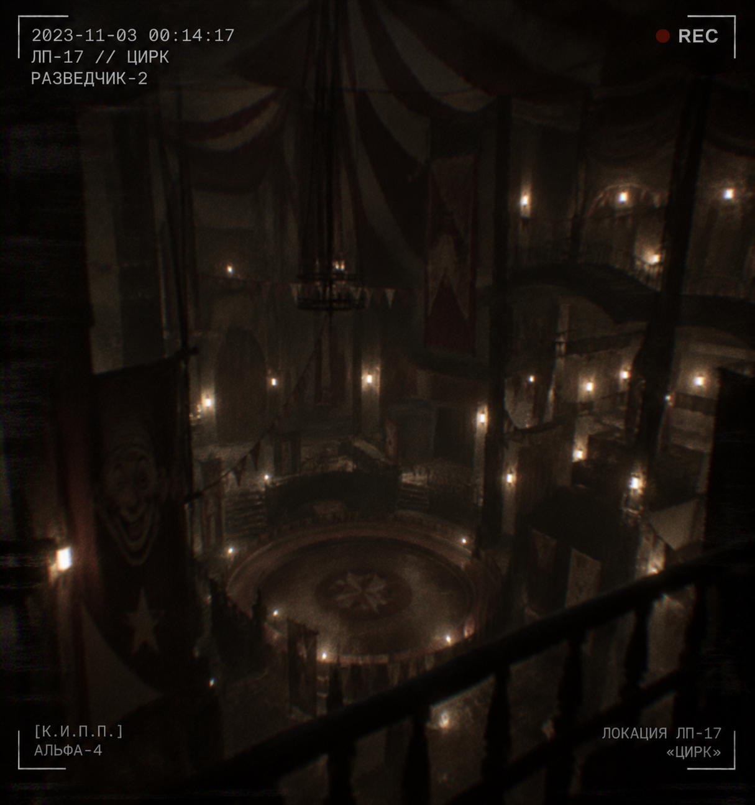
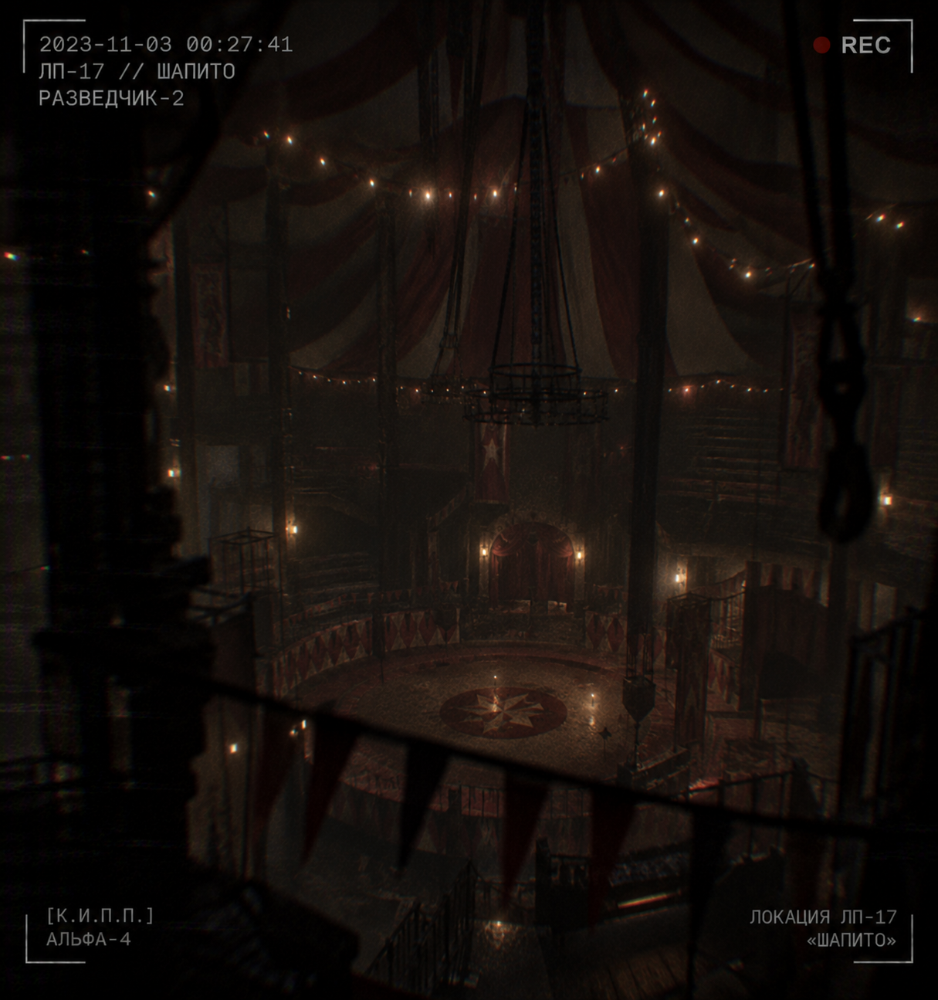
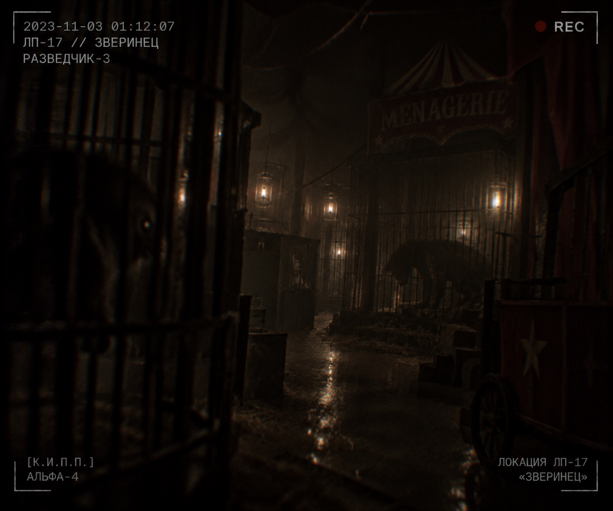
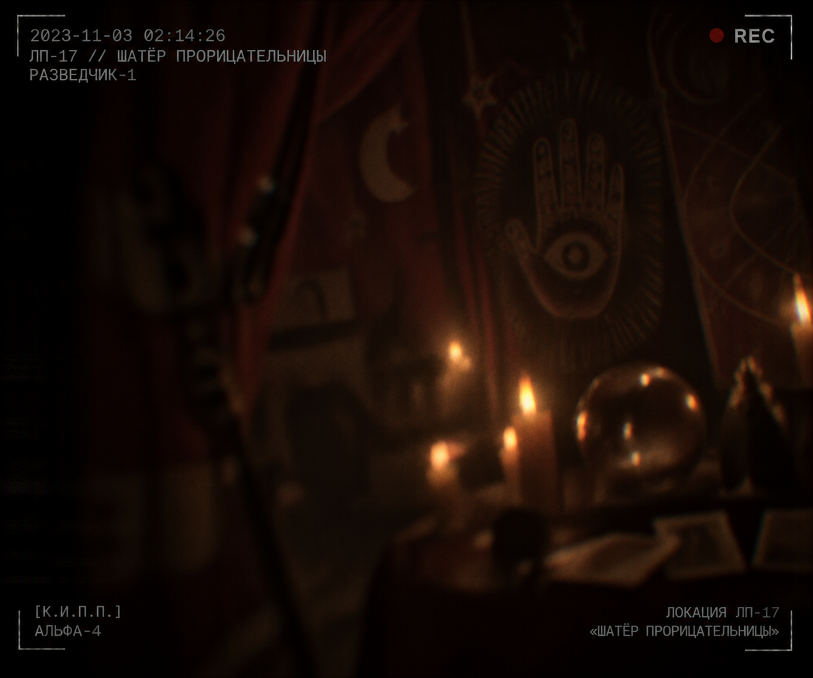
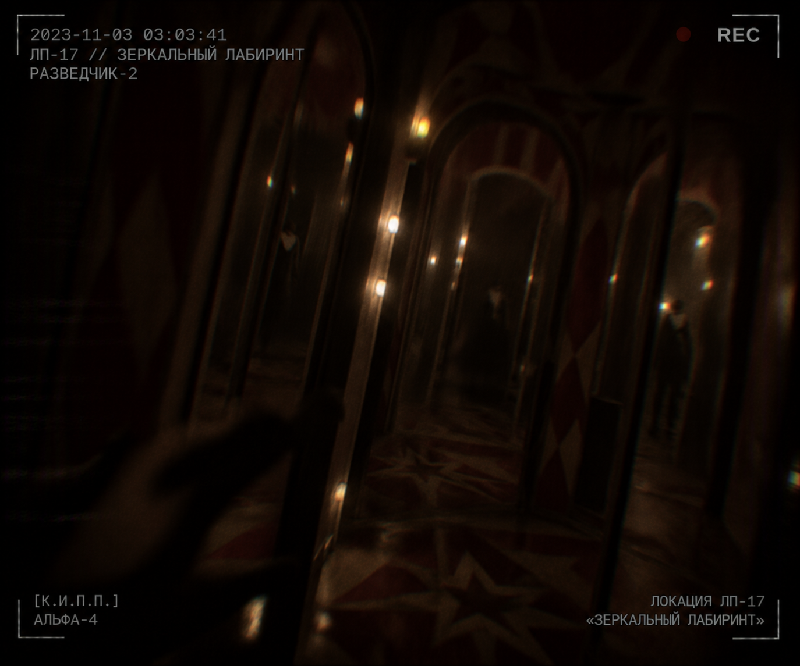
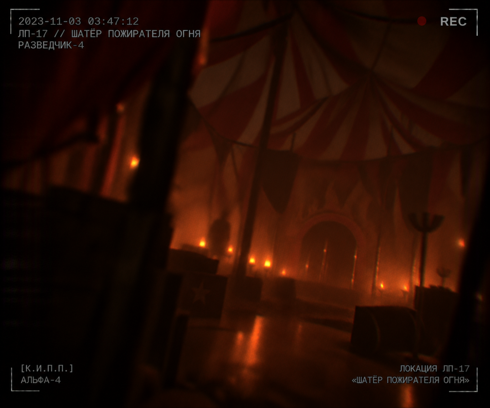
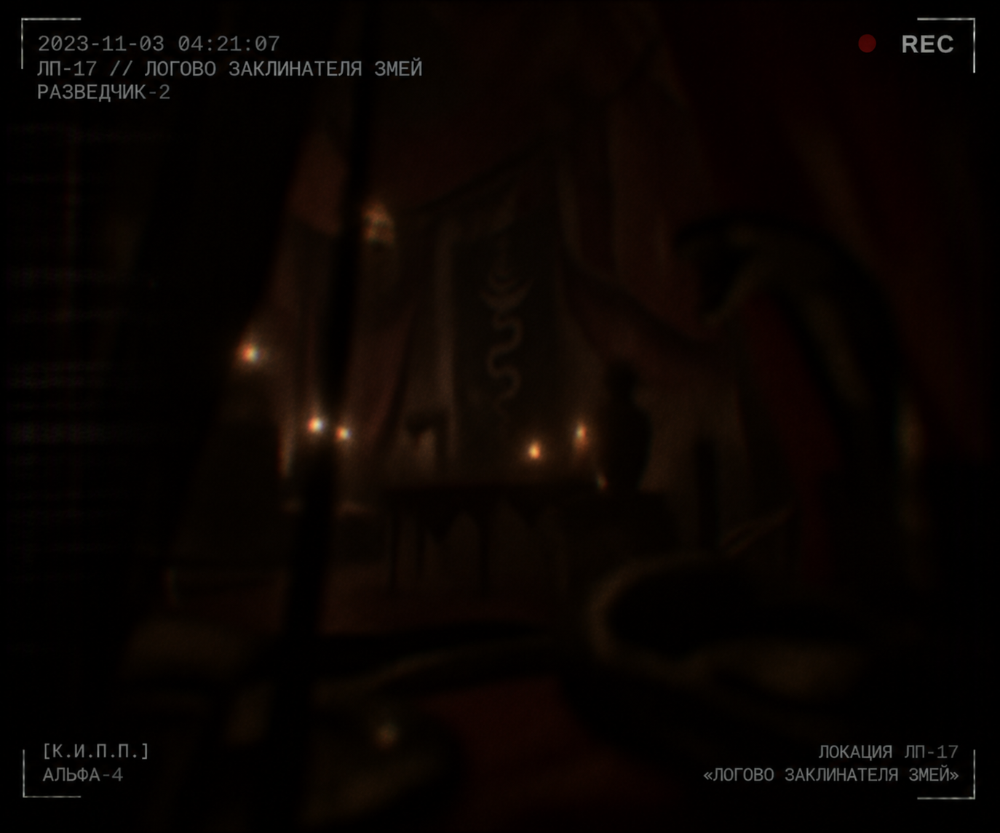
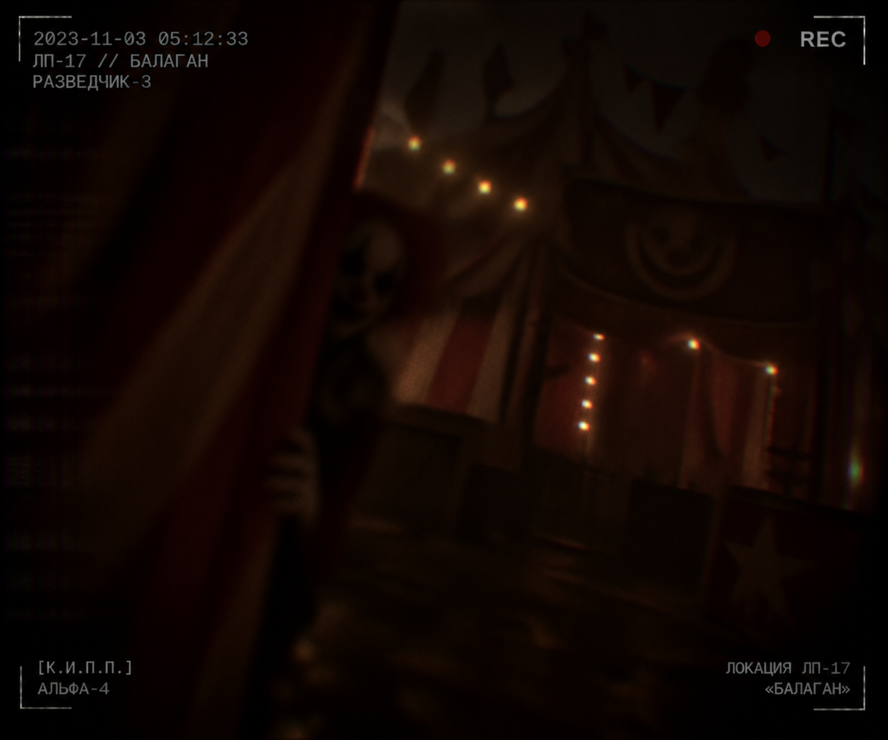

Отдел исследования лиминальных пространств
Досье аномальной локации № ЛП-17

Общая информация
Локация «Цирк» представляет собой лиминальное пространство, возникающее исключительно в результате пространственной перемены типа «Сопряжение».
Во время события реальный объект не исчезает, а вступает во взаимодействие с самим пространством. В результате архитектура здания, его внутренние помещения и окружающий рельеф подвергаются глубокой топологической деформации, образуя новую нестабильную среду.
По статистике К.И.П.П., сопряжения наиболее часто происходят в закрытых сооружениях: административных зданиях, учебных заведениях, пещерах, шахтах, подземных коммуникациях, бункерах и подвальных помещениях.
Настоящая версия локации сформирована на основе Ташкентского филиала МГУ, однако после начала сопряжения её планировка становится полностью неузнаваемой.
Изоляция пространства
После завершения события «Сопряжение» локация становится полностью замкнутой системой.
Все входы, выходы, окна, аварийные выходы и технологические проходы блокируются неизвестным энергетическим барьером, условно обозначенным как Завеса.
Свойства Завесы:
- не пропускает людей;
- не пропускает животных;
- не пропускает любые материальные объекты;
- не взаимодействует с известными видами энергии;
- не поддаётся разрушению существующими средствами.
За двадцать пять лет наблюдений ни одному агенту К.И.П.П. не удалось преодолеть Завесу силовым способом.
Единственный способ выхода
На текущий момент подтверждён лишь один способ покинуть пространство.
Необходимо полностью разрешить Парадокс, лежащий в основе существования данной версии лиминального пространства.
После устранения причины парадокса пространство начинает стремительно разрушаться, а Завеса исчезает.
Время существования открытого выхода крайне ограничено.
Парадоксы
Каждое лиминальное пространство существует благодаря внутреннему логическому противоречию — Парадоксу.
Парадокс одновременно поддерживает существование пространства и является причиной его нестабильности.
Согласно основной гипотезе Корпуса изучения пространственно-временных перемен, само существование лиминального пространства противоречит фундаментальным законам реальности.
Следствием этого является тенденция пространства к собственному прекращению существования.
По этой причине внутри него периодически возникают сущности, условно обозначенные как Проводники.
Проводники
Проводники являются частью самого пространства.
Их происхождение неизвестно.
Во всех известных случаях они:
- направляют исследователей;
- косвенно указывают на причину Парадокса;
- помогают собрать необходимые сведения;
- препятствуют бессмысленным действиям;
- никогда не дают прямого ответа.
Предполагается, что Проводники являются механизмом самоуничтожения пространства.
Несмотря на оказываемую помощь, доверять Проводникам полностью запрещается.
Их истинные мотивы неизвестны.
Пространственная структура
Внутреннее устройство локации не подчиняется законам евклидовой геометрии.
Зафиксированы следующие свойства:
- помещения способны менять взаимное расположение;
- лестницы могут вести в уже исследованные комнаты под другим углом пространства;
- пространство подверглось глубокой визуальной трансформации, приобретя выраженные черты циркового комплекса и утратив исходные признаки учебного заведения;
- окна не имеют выхода наружу;
- внешняя территория отсутствует.
Попытки составить точную карту оказались безуспешными.
Каждая экспедиция получает уникальную конфигурацию пространства.
Структура локации (Зоны)
На сегодняшний день подтверждено существование минимум восьми самостоятельных зон.
Порядок их появления никогда не повторяется.
Некоторые помещения могут отсутствовать, а некоторые — встречаться несколько раз.
Каждая зона отражает отдельный элемент общего Парадокса.
Только исследование всех ключевых зон позволяет приблизиться к его разрешению.
Известные области:
Шапито

Предположительно является центральной частью пространства.
Назначение неизвестно. Обитают SCP-MSU-003, SCP-MSU-003-1, SCP-MSU-003-2 и SCP-MSU-009.
Уровень опасности: Смертельный
Зверинец

[ДАННЫЕ УДАЛЕНЫ]
Во время прошлых экспедиций фиксировались признаки присутствия SCP-MSU-001.
Уровень опасности: Средний
Шатёр прорицательницы

Содержит большое количество символов и предсказаний.
Уровень опасности: Низкий
Зеркальный лабиринт

Нарушает восприятие пространства.
Зафиксированы случаи появления альтернативных версий участников экспедиции.
Уровень опасности: Низкий
Мастерская кукловода
[ДАННЫЕ УДАЛЕНЫ]
Назначение неизвестно.
Уровень опасности: Неизвестен
Шатёр пожирателя огня

Характеризуется крайне высокой температурой воздуха при полном отсутствии источников горения.
Уровень опасности: Неизвестен
Логово заклинателя змей

Наименее изученная часть пространства.
Все три экспедиции, достигшие данной области, были потеряны.
Уровень опасности: Высокий
Балаган

Был замечен SCP-MSU-004, поведение неустойчивое.
Уровень опасности: Средний
Заключение
На основании накопленных данных К.И.П.П. считает, что локация «Цирк» не является случайным набором помещений.
Она представляет собой единый логический механизм, разделённый на взаимосвязанные сцены.
Каждая зона содержит часть информации, необходимой для понимания истинной природы Парадокса.
До тех пор, пока Парадокс остаётся неразрешённым, пространство будет существовать, изменяться и продолжать ассимилировать новые объекты во время каждого события типа «Сопряжение».